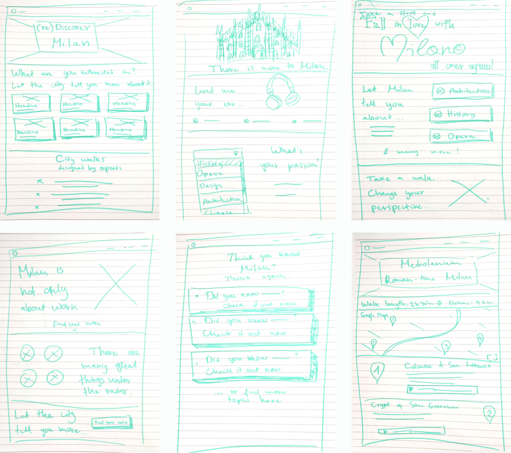

Giro

Giro was the final project of a 4-weeks course I took with DesignLab. The course covered the entire design process from concept, creation, iteration into a finished product. The challenge was to create a concept for a product which would promote a city of my choice, targeted to a specific niche. The final deliverable was a high-fidelity landing page, along with the worked-out product concept and branding.
My role & tasks
Wireframing
UX & UI design
Branding concept
Discovery & ideation
I had followed IDEO's design thinking methodology during the ideation phase of the project. The city I chose to focus on for the project was Milan, Italy. In order to find a specific angle for an interesting promotional product, I had interviewed various people about their perceptions of Milan, Italians and foreigners alike. A common pattern I had identified during these interviews is, Milan is often seen as a city for work, with good job opportunities, but not much charm. As my subjects had explained, Milan is known primarily as a hub for commerce, banking and fashion. Its cultural sights are lesser known, especially in comparison with other Italian cities like Rome, Venice or Florence, which have a world-famous cultural heritage. This core finding has led to the formulation of my primary design problem: "How might we promote a side of Milan that is not only about fashion and business?"
In order to answer this question while keeping user interests in mind, I had created two personas, Kate and Angelo:
Persona #1: Kate
Persona #1: Angelo
What solutions might address these user problems? How could the solution be delivered to them in a hassle-free way, as something they could do in their own time? As a result of various design thinking brainstorming exercises (mind map, top five etc.), I had developed the idea of self-guided city walks in Milan, organized around various topics of interest (such as food, history, music and others).
Design & Branding
Landing page wireframing
Following the guidelines of rapid prototyping, I had created various visual and communication concepts for the product's landing page. The final design was then iteratively created as a combined and refined version of these first sketches, based on feedback from my mentor during feedback sessions.
Logo Design
The next steps were creating the visuals and branding for the product: choosing a suitable typeface, color palette, imagery and designing a logo. The logo design process in particular was an excellent learning opportunity for me, and one which I had greatly enjoyed.
Hand-drawn and digital logo design sketches
High-fidelity mockups
Conclusion & Reflection
What I've learned from this project:
- IDEO's design thinking practices for ideation come in handy no matter the size of the project! At first I was unsure whether it made sense to apply them to a small-scale practice project, but I was amazed with how much it helped me get done.
- I've learned a lot about logo design, and had a lot of fun messing around with different concepts!